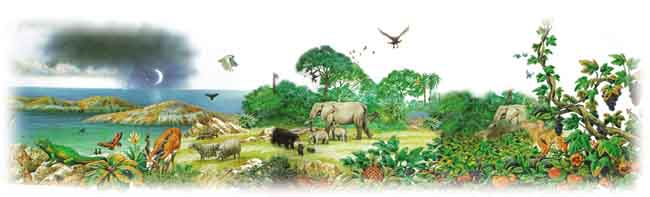
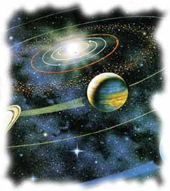

,
,Dinimizi Öðrenelim |
|
, Dinimizi Öðrenelim |
MUCÝZELERLE DOLU KURAN
Peygamberimize verilen en büyük mucizenin Kuran olduðunu daha önce belirtmiþtik. Kuran, insanlara günümüzden 1400 yýl önce gönderilmiþtir. Fakat içinde anlatýlan öyle gerçekler vardýr ki, onlarýn günümüzdeki bilimsel buluþlara uygun olduðu daha yeni anlaþýlabilmiþtir.

Kainattaki herþeyi, gezegenleri, yýldýzlarý, insanlarý, hayvanlarý, doða kanunlarýný Allah yaratmýþtýr. Rabbimiz olan Allah, bizim daha keþfetmediðimiz herþeyi zaten bilmektedir. Dilediklerini Kuran'da bize bildirmiþtir. Biz sadece zamaný gelince bu bilgileri öðrenmekte ve bunlarýn Allah'ýn birer mucizesi olduðunu anlamaktayýz.
Kuran'ýn pek çok bilimsel mucizesi vardýr. Burada Kuran'ýn bilimsel mucizelerinin hepsini deðil, sadece birkaç tanesini örnek olmasý için anlatacaðýz. (Kuran'ýn daha pek çok mucizesini öðrenmek istiyorsanýzKuran Mucizeleri isimli kitabýmýzý okuyabilirsiniz.)
Kuran'da evrenin ortaya çýkýþý þöyle açýklanýr:
BÝZ GÖÐÜ 'BÜYÜK BÝR KUDRETLE' BÝNA ETTÝK VE ÞÜPHESÝZ BÝZ, (ONU) GEÝÞLETÝCÝYÝZ.
(ZARÝYAT SURESÝ, 47)O gökleri ve yeri yoktan var edendir... (Enam Suresi, 101)
Kitabýn ilk bölümünde hatýrlarsanýz evrenin hiçbir þey yokken bundan yaklaþýk olarak 15 milyar yýl önce bir patlamayla ortaya çýktýðýný detaylý olarak anlatmýþtýk. Yani evren hiçbir þey yokken birdenbire var olmuþtur.
Bu büyük buluþun delilleri ise, ancak geçtiðimiz yüzyýlda çok modern teknolojik aletlerle elde edildi. Dolayýsýyla bunun 1400 yýl önce bilinmesi mümkün deðildi. Ama yukarýdaki ayette de gördüðünüz gibi, Allah bu gerçeði bize hiçbir insanýn bundan haberdar olmadýðý, Kuran ilk indirildiði dönemde bildirmiþtir. Bu anlatým Kuran'ýn bir mucizesidir ve onun Allah'ýn sözü olduðunun delillerinden biridir.
Evrenin patlamayla ortaya çýkýþý ve hala geniþlemekte olduðu günümüzde ispatlanmýþtýr. Bunu da size baþtaki bölümlerde þiþirilen bir balon örneði vererek anlatmýþtýk. 15 milyar yýl önce yaratýlan maddeler bu patlamanýn etkisiyle hala birbirlerinden uzaklaþmaya devam etmektedirler. Yani tüm evren büyük bir patlamanýn ardýndan geniþlemeye devam etmiþtir ve hala da geniþlemektedir. Modern astronomi araçlarý ile yapýlan araþtýrmalar sonucu bu, çok açýk olarak gözlemlenmiþtir. Bu gerçek de 1400 yýl önce, tek bir insanýn dahi bundan haberdar olmadýðý bir zamanda, Kuran'da bir mucize olarak bildirilmiþtir. Bu konuyla ilgili ayet þöyledir:
Biz göðü 'büyük bir kudretle' bina ettik ve þüphesiz Biz, (onu) geniþleticiyiz. (Zariyat Suresi, 47)

ÝÞTE BU, SÝZÝN RABBÝNÝZ ALLAH'TIR; HERÞEYÝN YARATICISIDIR; O'NDAN BAÞKA ÝLAH YOKTUR. ÖYLEYSE NASIL OLUR DA ÇEVRÝLÝYORSUNUZ?
(MÜMÝN SURESÝ, 62)Pek çoðunuz Dünyamýzýn ve diðer gezegenlerin bir yörüngesi olduðunu biliyor olabilirsiniz. Aslýnda sadece Güneþ Sistemimizdekilerin deðil, evrendeki bütün gök cisimlerinin bir yörüngesi vardýr. Yani hepsi kendileri için belirlenmiþ olan bir yol üzerinde dolaþýrlar. Bilim adamlarý bu bilimsel gerçeði yakýn bir dönemde keþfetmiþlerdir. Ancak günümüzden 1400 yýl öncesi gibi, gök cisimlerinin yörüngelerinden haberdar olunmadýðý bir dönemde, Kuran'da Allah bu gerçeði bir mucize olarak þöyle bildirmiþtir:
Geceyi, gündüzü, Güneþ'i ve Ay'ý yaratan O'dur; her biri bir yörüngede yüzüp gidiyor. (Enbiya Suresi, 33)
Bu ayette gördüðünüz gibi, Allah ancak günümüzde anlaþýlan bilimsel bir gerçeði haber vermektedir. Kuran'ýn indirildiði dönemde insanlar gök cisimlerinin sabit yörüngelerde hareket ettiklerinden habersizdirler. Ama Allah herþeyi bilen ve dilediðini de kullarýna bildirendir.
Kuran'ýn gönderildiði dönemdeki gök bilim anlayýþýna göre, Dünya'nýn týpký bir tepsi gibi düz olduðu düþünülüyordu. Dikkat ederseniz, bugün herkesin bildiði bu gerçek bile o zaman bilinmiyordu. Ama Kuran'da kullanýlan kelimelerden Dünya'nýn yuvarlak olduðu açýk þekilde anlaþýlýyordu. Bu bilginin bize haber verildiði ayet þöyledir:
Gökleri ve yeri hak olarak yarattý. Geceyi gündüzün üstüne sarýp-örtüyor, gündüzü de gecenin üstüne sarýp-örtüyor... (Zümer Suresi, 5)
Bu ayetin Türkçesinde "sarýp-örtme" diye tercüme edilen kelimenin Arapçadaki tam anlamý, "bir þeyi yuvarlak bir þeyin üstüne sarmak"týr. Demek ki, gece ve gündüzün üzerine sarýldýðý Dünya yuvarlaktýr. Oysa biraz önce de söylediðimiz gibi, Kuran'ýn indirildiði dönemde Araplar Dünya'nýn düz olduðunu zannediyorlardý. Kuran'da ise Dünya'nýn yuvarlak olduðuna iþaret edilmiþti. Çünkü Allah herþeyin en doðrusunu insanlara öðretendir. Allah'ýn kitabý Kuran'da o devirde bildirilen bu gerçek yüzyýllar sonra bilim adamlarý tarafýndan keþfedildi ve Dünya'nýn yuvarlak olduðu anlaþýldý.
Kuran, Allah'ýn sözü olduðu için bilimsel tarifler yapýlýrken olabilecek en doðru kelimeler kullanýlmýþtýr. Herhangi bir insanýn bunlarý bilip kullanmasý mümkün deðildir. Ama Allah herþeyi bildiði için gerçekleri istediði herhangi bir dönemdeki insanlara bildirebilir.
Allah Kuran'da insanýn yaratýlýþýndan söz ederken özellikle parmak uçlarýna dikkat çekmiþtir:
Ýnsan, onun k����������������������������������������������������������������������������������������������������������������������������������������������������������������������������������������������������������������������������������������������������������������������������������������������������������������������������������������������������������������������������������������������������������������������������������������������������������������������������������������������������������������������������������������������������������������������������������������������������������������������������������������������������������������������������������������������������������������������������������������������������������������������������������������������������������������������������������������������������������������������������������������������������������������������������������������������������������������������������������������������������������������������������������������������������������������������������������������������������������������������������������������������������������������������������������������������������������������������������������������������������������������������������������������������������������������������������������������������������������������������������������������������������������������������������������������������������������������������������������������������������������������������������������������������������������������������������������������������������������������������������������������������������������������������������������������������������������������������������������������������������������������������������������������������������������������������������������������������������������������������������������������������������������������������������������������������������������������������������������������������������������������������������������������������������������������������������������������������������������������������������������������������������������������������������������������������������������������������������������������������������������������������������������������������������������������������������������������������������������������������������������������������������������������������������������������������������������������������������������������������������������������������������������������������������������������������������������������������������������������������������������������������������������������������������������������������������������������������������������������������������������������������������������������������������������������������������������������������������������������������������������������������������������������������������������������������������������������������������������������������������������������������������������������������������������������������������������������������������������������������������������������������������������������������������������������������������������������������������������������������������������������������������������������������������������������������������������������������������������������������������������������������������������������������������������������������������������������������������������������������������������������������������������������������������������������������������������������������������������������������������������������������������������������������������������������������������������������������������������������������������������������������������������������������������������������������������������������������������������������������������������������������